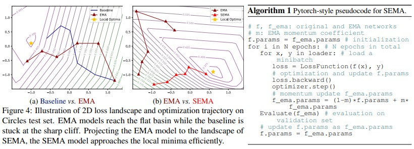

I am currently pursuing my undergraduate degree at Hong Kong Baptist University. Previously, I gained valuable research experience as a research intern at the Shenzhen Institute of Advanced Technology, Chinese Academy of Sciences. Currently, I am furthering my research skills as a research intern at the Center for Artificial Intelligence Research and Innovation Lab, Westlake University, under the esteemed supervision of Stan.Z.Li.
My areas of interest include Multimodel Large Language Model, Optimization in Deep Learning and Computer Vision.
You can find me at the following websites:
Internship Experience
Research Intern at Shenzhen Institute of Advanced Technology, Chinese Academy of Sciences
Start Date: 2023-07-26, End Date: 2023-09-6
Research Intern at Center for Artificial Intelligence Research and Innovation Lab, Westlake University
Start Date: 2023-07-27, End Date: Present
Research Intern at International Machine Learning Research Center, Peking University
Start Date: 2024-03-9, End Date: Present
International Collaboration
Collaboration with UNC
Start Date: 2024-04-23, End Date: Present
Cooperated with Professor Huaxiu Yao's Lab.
News
-
Switch EMA: A Free Lunch for Better Flatness and Sharpness

SEMA is currently available on the arXiv preprint website.
Services
Membership
- 2023 - Student Member of Chinese Association for Artificial Intelligence (CAAI)
- 2024 - Student Member of IEEE
Do you want to engage in meaningful cooperation with me? If you are interested, please contact me
- Email: juanxitian1031@gmail.com